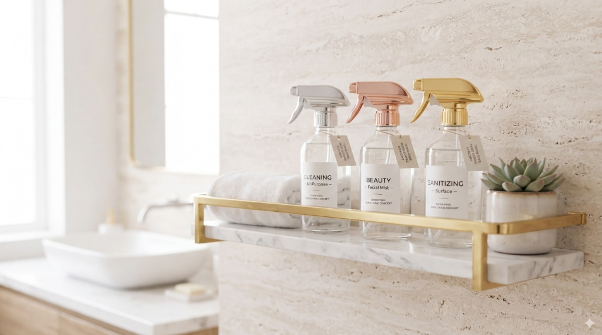
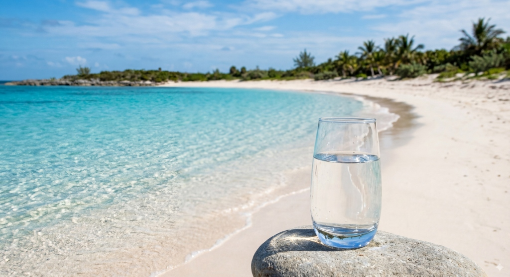

Los mayores engaños comerciales prosperan porque no hacemos las matemáticas a largo plazo. Hoy vamos a sacar la calculadora y exponer por qué comprar agua envasada no solo arruina tu fisiología, sino que devora silenciosamente tus finanzas.
Familia promedio (4 personas), consumiendo 1.5 litros diarios de agua embotellada de gama media (0,40€/litro):
17.280 €
*Cálculo conservador. No incluye inflación ni coste en medicamentos o desengrasantes semanales.*
Adquisición del modelo premium Leveluk K8. Vida útil garantizada con placas sólidas de 15 a 25 años.
~ 7.600 €
Ahorro Neto Real: + 9.680 €
Estás perdiendo más de 9.000 euros en los próximos 20 años pagando por el privilegio de beber agua de calidad dudosa, conservada en plástico expuesto al sol, muerta y desprovista de potencial antioxidante vivo.
Si te sorprendieron los 9.680€ de ahorro sólo en agua para beber, el verdadero poder financiero de un ionizador médico se despliega cuando anula tus compras en el supermercado.

Sustituye la lejía, el enjuague bucal químico, el alcohol de curar, desinfectantes de manos, friegasuelos y jabones fungicidas. Poder bactericida documentado de grado hospitalario en solo 30 segundos, totalmente ecológico y sin emanar gases tóxicos en casa.
El pH exacto de la piel huamana. Actúa como un tónico facial premium astringente, cerrando los poros. Sustituye al agua micelar, tónicos de marca (que cuestan 20€ el bote), acondicionadores de cabello ligeros y sprays refrescantes para quemaduras solares leves.
Extremadamente reductora. Emulsiona los aceites y las grasas. Sustituye al KH7, quitagrasas de cocina, detergentes fuertes para ollas incrustadas, limpiacristales e incluso detergentes de lavadora de uso diario. Además de ser la cura absoluta y natural tras limpiar frutas de pesticidas oleosos.
Ahorro Estimado Adicional: El gasto medio de un hogar español en limpieza del hogar y parafarmacia básica asciende a 30-40€ mensuales. Eso suma otros +8.000€ a 20 años, elevando el ahorro total de la máquina a cifras de escándalo.

Si todos los argumentos fisiológicos expuestos en los módulos anteriores no logran conmoverte, o si crees que los +9.000€ de ahorro matemático no son reales... piensa en los microplásticos. La salud del planeta ya nos está avisando. El modelo es insostenible. Esta es la revolución definitiva de higiene y consumo sensato para esta década.